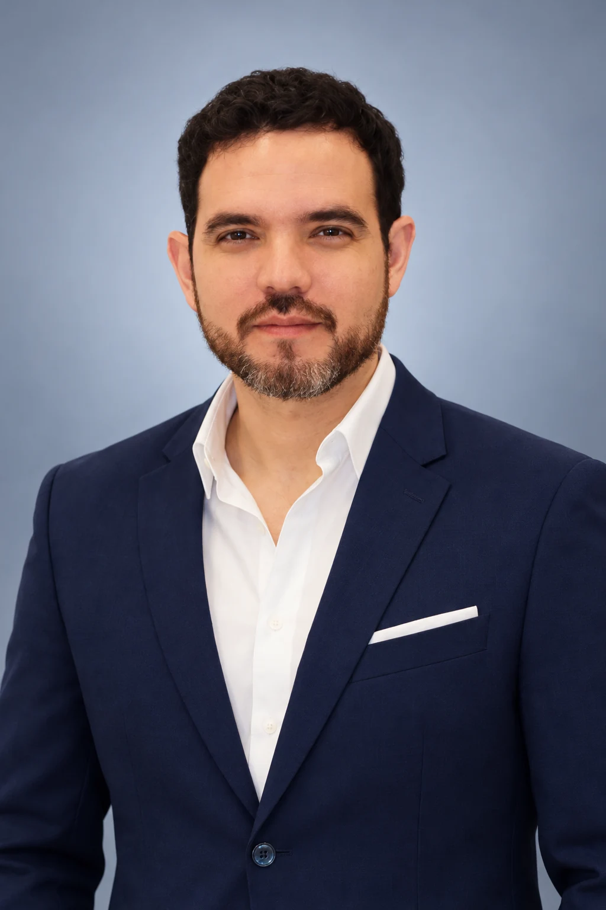

01 / PLASTIC SURGERY
Your goals. A surgical perspective.
Face, breast and body procedures begin with a medical assessment, a discussion of expectations and an individual care plan.
Plastic surgery and hair restoration. Two clinical routes, beginning with you.

Portrait retouched from an original public photographFace, breast and body procedures begin with a medical assessment, a discussion of expectations and an individual care plan.
Start by understanding the assessment and the options the clinician may consider for your case. A personal plan determines the next steps and follow-up.
Dr. Héctor J. García’s practice is located in Floridablanca, in the Bucaramanga metropolitan area. His public profile presents medical training at Universidad Industrial de Santander and specialization at Universidad Militar Nueva Granada.
Read the professional profile ↗Plastic surgery and hair restoration involve different assessments. Begin by identifying the route to discuss with Dr. García.
The clinician determines the assessment, care and follow-up. Coordinate dates only once the practice has explained the next steps.
Know who to contact before the visit and after you return home. Confirm arrangements through the practice’s official channels.
Ask the practice about remote consultation, language and coordination for your individual case.
Your clinician determines the plan, visits and follow-up after assessment. Confirm this before arranging travel.
This is a demonstration of the proposed experience. No appointment is booked and no data is sent. Use the official channels for real availability.